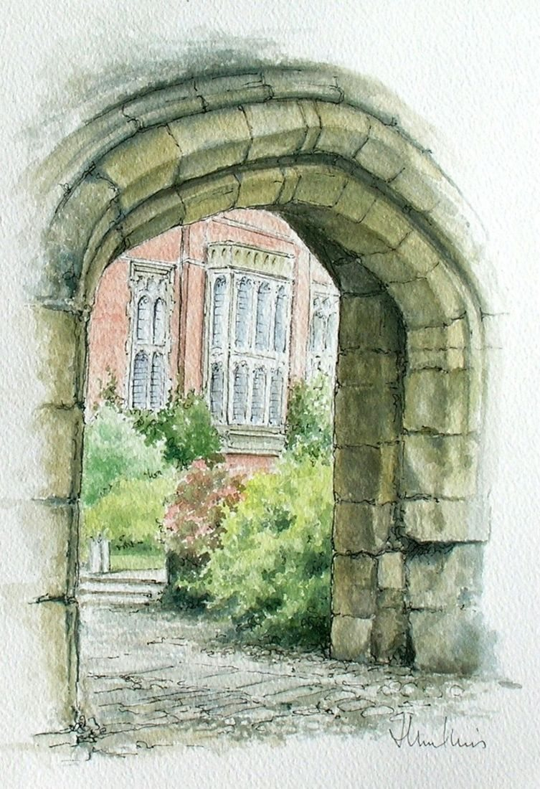

Old Gateway Winchester
No. 53- Medium
- Ink and watercolour on paper
- Size
- 26 × 18 cm
- Year
- 1980s
- Inspired by
- Winchester, Hampshire
- Price
- £80
An old gateway in Winchester, where old buildings add to the attractions of this city. It was done in ink with a watercolour wash of paint.
Ask about this paintingOr email enquiries@joanmullinsart.co.uk, quoting No. 53. UK only. Collection from Nantwich is free; UK postage is quoted when you enquire.